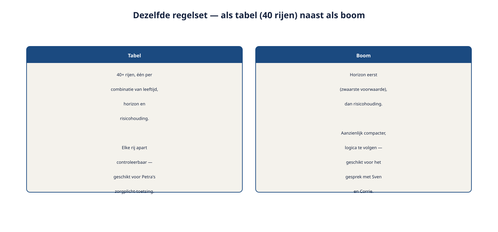

Deel 16 — Modeling: data en beslisregels + modelkwaliteit
Reader · Ductus-cursus Requirements engineering · niveau 2 (professional) · deel 16 van 22
Cursus Requirements Engineering — Ductus. Deze cursus bereidt voor op de CPRE-certificering van IREB en is uitdrukkelijk geen vervanging van het officiële syllabus- en examenmateriaal.
Leerdoelen
Na dit deel kun je:
- een eenvoudig conceptueel datamodel opstellen voor een requirementsdomein;
- kiezen tussen een beslistabel en een beslisboom, afhankelijk van de aard van de combinaties;
- een beslisregelset toetsen op volledigheid, consistentie en minimaliteit;
- de basisbegrippen van DMN als notatie plaatsen, met een correcte verwijzing naar waar de diepgang wordt behandeld;
- uitleggen hoe dit deel spanningsveld 2 (complexiteit van de rekenregels) afrondt.
16.1 Veertig regels
Marloes levert de rekenregels aan die bepalen welk risicoprofiel bij een deelnemer past: een combinatie van leeftijd (drie categorieën), resterende beleggingshorizon (drie categorieën) en risicohouding uit de vragenlijst (vijf categorieën, van zeer voorzichtig tot zeer offensief). Dat zijn, in de meest simpele opzet, tot 45 mogelijke combinaties — en in de praktijk, met een paar uitzonderingsregels erbovenop, ruim veertig regels.
De beslistabel-aanpak uit deel 5 (niveau 1) — één rij per combinatie — is hier nog steeds technisch bruikbaar, maar wordt bij deze omvang onoverzichtelijk als plat document. Dit deel geeft je het gereedschap om met deze schaal om te gaan: wanneer een tabel nog werkt, wanneer een boom beter past, en hoe je vaststelt of de regelset zelf klopt.
16.2 Van beslistabel naar beslisboom
Een beslistabel (deel 5, niveau 1) legt elke combinatie van voorwaarden als een aparte rij vast. Dat werkt uitstekend zolang de voorwaarden ongeveer even zwaar wegen en er relatief weinig combinaties zijn. Bij veertig-plus rijen wordt een tabel moeilijk in één oogopslag te doorgronden, ook al is hij formeel nog correct.
Een beslisboom legt dezelfde logica vast als een opeenvolging van vragen: eerst de belangrijkste onderscheidende voorwaarde, dan de volgende, enzovoort — met als resultaat een boomstructuur waarin niet elke combinatie een eigen, losse rij hoeft te zijn.
Voorbeeld — het risicoprofiel als boom, sterk vereenvoudigd:
Beleggingshorizon?
├── Kort (< 10 jaar)
│ └── Risicohouding?
│ ├── Voorzichtig → Profiel A (zeer defensief)
│ └── Overig → Profiel B (defensief)
├── Middellang (10–20 jaar)
│ └── Risicohouding?
│ ├── Voorzichtig → Profiel B (defensief)
│ ├── Neutraal → Profiel C (neutraal)
│ └── Offensief → Profiel D (offensief)
└── Lang (> 20 jaar)
└── Risicohouding?
├── Voorzichtig → Profiel C (neutraal)
└── Overig → Profiel D of E, afhankelijk van leeftijd
Wanneer welke vorm
Kies een tabel wanneer de voorwaarden ongeveer gelijkwaardig zijn, het aantal combinaties beperkt blijft (grofweg tot een man of twintig), en je wilt dat elke combinatie in één oogopslag apart controleerbaar is — bijvoorbeeld bij een audit of formele goedkeuring, waar "laat me elke rij zien" een reële eis kan zijn (verwacht bij Petra's zorgplicht-toetsing).
Kies een boom wanneer één voorwaarde duidelijk het zwaarst weegt en de andere er ondergeschikt aan zijn (zoals bij het risicoprofiel: horizon weegt zwaarder dan risicohouding), en wanneer je vooral wilt dat de logica te volgen is voor iemand die de redenering wil begrijpen, niet alleen wil controleren.
In de praktijk: vaak is een boom het communicatiemiddel (om uit te leggen en te bediscussiëren, bijvoorbeeld met Sven en Corrie) en een tabel het formele, volledige vastleggingsmiddel (voor Petra's toetsing en voor de bouw). Beide vormen kunnen naast elkaar bestaan voor dezelfde regelset — vergelijk deel 5 (niveau 1): meerdere werkproducten voor dezelfde requirement, zolang duidelijk is welke leidend is.
16.3 Het onderliggende datamodel
Voordat beslisregels goed te formuleren zijn, moet helder zijn over wélke gegevens ze eigenlijk gaan. Een eenvoudig conceptueel datamodel (in requirements-taal, geen technisch databaseschema) brengt de kernentiteiten en hun onderlinge relaties in kaart.
Voorbeeld — kernentiteiten voor het risicoprofieldomein:
Deelnemer ──(vult in)──> Vragenlijstantwoord
Deelnemer ──(heeft)────> Beleggingshorizon (afgeleid van leeftijd en pensioendatum)
Vragenlijstantwoord + Beleggingshorizon ──(bepaalt)──> Risicoprofiel
Risicoprofiel ──(heeft)──> Scenario-uitkomst (meerdere, bij verschillende marktomstandigheden)
Dit datamodel is bewust conceptueel: het toont entiteiten, relaties en (waar relevant) de belangrijkste attributen, zonder technische velden, sleutels of datatypes — dat is het werk van een data-architect of DBA, niet van de requirements engineer. Wat de requirements engineer wél levert, is de betekenis: wat is een Risicoprofiel, hoe hangt het samen met een Vragenlijstantwoord, en welke regel (paragraaf 16.2) bepaalt de relatie.
↗ Raakvlak: voor de volledige uitwerking naar een logisch (LDM) en fysiek (PDM) datamodel, zie de Ductus-datacursus (datamanagement, data-analyse en data governance). Dit deel behandelt uitsluitend het conceptuele niveau dat een requirements engineer nodig heeft om beslisregels correct te funderen.
16.4 Modelkwaliteit: consistentie, volledigheid, minimaliteit
Een beslisregelset — tabel of boom — kan er overtuigend uitzien en toch gebreken bevatten die pas bij gebruik aan het licht komen. Drie toetsen, uit te voeren voordat een regelset wordt opgeleverd.
Volledigheid. Is elke mogelijke combinatie van invoerwaarden gedekt door minstens één regel? Een gat in de dekking betekent dat een deelnemer met een bepaalde combinatie helemaal geen profiel toegewezen krijgt — een fout die in productie pas opvalt wanneer die specifieke combinatie zich voordoet, vaak lang na oplevering.
Consistentie. Bestaat er een combinatie die door twee verschillende regels wordt gedekt, met een tegenstrijdige uitkomst? Dit gebeurt gemakkelijker dan het klinkt, vooral bij een boom met meerdere vertakkingen die elkaar per ongeluk overlappen.
Minimaliteit. Zijn er regels die, zonder verlies van betekenis, kunnen worden samengevoegd? Te veel bijna-identieke regels maken een set onnodig moeilijk te onderhouden en te controleren — al mag minimaliteit nooit ten koste gaan van de andere twee toetsen: soms is een net iets uitgebreidere set duidelijker dan een compactere.

Hoe je deze toetsen in de praktijk uitvoert
Bij een kleine regelset (zoals de beslistabel over aanleveringscorrecties uit deel 5, niveau 1) is handmatig doorlopen vaak voldoende. Bij veertig-plus regels is dat foutgevoelig — precies het soort taak waar systematisch, stap-voor-stap doorlopen (of geautomatiseerde ondersteuning, waar deel 20 verder op ingaat) meerwaarde heeft. Werk in elk geval systematisch: doorloop elke voorwaardecombinatie methodisch (bijvoorbeeld horizon-voor-horizon, en binnen elke horizon alle risicohoudingen), in plaats van de tabel of boom "op gevoel" te controleren.
16.5 DMN, kort geplaatst
DMN (Decision Model and Notation) is een gestandaardiseerde manier om beslisregels te modelleren, met een vaste notatie voor beslistabellen en een expliciete manier om aan te geven hoe regels zich tot elkaar verhouden wanneer er meerdere tegelijk van toepassing zouden kunnen zijn (een zogeheten hit policy — bijvoorbeeld: de eerste toepasselijke regel geldt, of: alle toepasselijke regels moeten worden gecombineerd).
Dit deel behandelt DMN niet in de volle breedte — dat is het onderwerp van de Ductus-cursus BPMN, CMMN en DMN. Wat hier van belang is: als requirements engineer moet je weten dát een gestandaardiseerde notatie bestaat, waarom hij bestaat (om precies de problemen uit paragraaf 16.4 — volledigheid, consistentie — systematisch te kunnen toetsen, desnoods met tooling), en wanneer je een architect of procesmodelleur erbij haalt om een regelset in DMN te formaliseren.
↗ Raakvlak: de volledige DMN-notatie, inclusief hit policies en de koppeling met BPMN-processen en CMMN-cases, wordt behandeld in de Ductus-cursus BPMN, CMMN en DMN.
16.6 Toegepast op het risicoprofiel
Marloes' veertig regels worden nu, met het gereedschap van dit deel:
- Gestructureerd als boom voor het gesprek met Sven en Corrie (paragraaf 16.2) — horizon als eerste onderscheidende vraag, risicohouding als tweede.
- Vastgelegd als volledige tabel voor Petra's zorgplicht-toetsing en voor de bouw, met elke combinatie apart controleerbaar.
- Onderbouwd met het conceptuele datamodel (paragraaf 16.3), zodat helder is wat een Risicoprofiel precies is en hoe het aan een Vragenlijstantwoord en een Beleggingshorizon hangt.
- Getoetst op volledigheid, consistentie en minimaliteit (paragraaf 16.4), systematisch doorlopen per horizon-categorie.
Dit is precies de tegenhanger van "paragraaf 14" uit niveau 1: waar WGP 2.0 een complexe regel in vijf zinnen tekst liet verdwalen, krijgt de risicoprofiel-regel hier vanaf het begin een vorm die zijn complexiteit aankan.
Wat verandert er als je iteratief werkt?
Beslisregels groeien vaak incrementeel: een eerste, grove versie van de boom in een vroege sprint, verfijnd naarmate Marloes meer uitzonderingen aanlevert. Bij elke toevoeging moeten de drie kwaliteitstoetsen opnieuw — of geautomatiseerd — worden uitgevoerd; een regelset die bij versie 1 consistent en volledig was, kan dat na een kleine toevoeging niet meer zijn. Dit is een concreet voorbeeld van wijzigingsbeheer (deel 9, niveau 1) toegepast op modellen in plaats van op losse tekstuele requirements.
16.7 Spanningsveld 2 afgerond
Met dit deel is spanningsveld 2 — de complexiteit van de rekenregels — volledig gedekt: context- en doelmodellen op programmaniveau en systeemoverstijgend gedrag (deel 15), en nu data en beslisregels met bijbehorende kwaliteitstoetsen (dit deel).
De Modeling-module (Practitioner) is hiermee compleet. Deel 17 opent de Management-module en daarmee spanningsveld 3: beheer over systeemgrenzen.
Samenvatting
- Een beslistabel toont elke combinatie apart; een beslisboom volgt de zwaarste onderscheidende voorwaarde eerst — beide kunnen naast elkaar bestaan voor dezelfde regelset.
- Een conceptueel datamodel legt de betekenis van entiteiten en hun relaties vast, zonder technische details — dat is het werk van de data-architect.
- Drie kwaliteitstoetsen: volledigheid (elke combinatie gedekt), consistentie (geen tegenstrijdige overlap), minimaliteit (geen overbodige regels).
- DMN is de gestandaardiseerde notatie voor beslisregels; de volledige diepgang hoort bij de BPMN/CMMN/DMN-cursus.
- Elke wijziging aan een beslisregelset vraagt een hernieuwde toets op volledigheid en consistentie.
Begrippen
beslistabel · beslisboom · conceptueel datamodel · volledigheid · consistentie · minimaliteit · DMN · hit policy
Leeswijzer naar het volgende deel
Deel 17 opent de Management-module met attributen, prioritering en baselines op programmaniveau — de verdieping die spanningsveld 3 (beheer over systeemgrenzen) aanpakt.